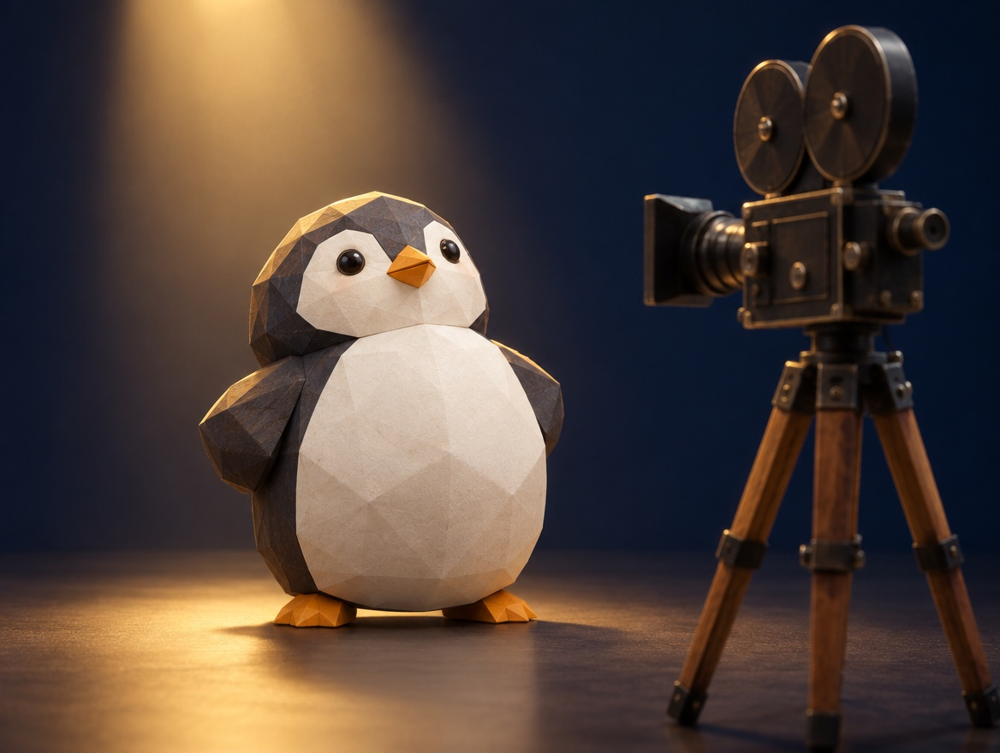

🧪 LAB · 試作 — AIが読書メモから一気に作った記事です。本番の一覧には出していません · 試作の一覧
🐧 EVERYDAY LIFE⚡ 42 SEC
On a bad day, imagine a documentary camera is filming you 🎥

Sound Familiar
On a day with rain and no umbrella, or a day when a test went badly, do you feel down?
The Point
On days like that, imagine a camera for a documentary show is filming you.
The Reason
This is because looking at yourself from the outside gives your heart some room.
When you are down, you tend to see only the problem in front of you.
Through the camera, even the sad you starts to look cool, like "Now is the time to hang in there."
⚡ TRY IT
Turn on the camera
Same bad moment. Turn the documentary camera on, and see what changes.
REC00:00
Rain, and no umbrella. Sigh…
The test did not go well. Sigh…
Lost in a new city. Sigh…
🎙️ "Even in the rain, our hero did not give up."
🎙️ "Now is the time to hang in there."
🎙️ "And here, the big adventure began."
⭐ Hero scenes:
🏆 All 3 bad moments became hero scenes!
For Example
For example, even if you get lost in a new city, add a narration: "And here, the adventure began."
Try This
Next time you feel down, say "Camera on" in your heart.
In Short
Any day is an important scene in your story when you look back later.
📚 I wrote this from my reading notes.